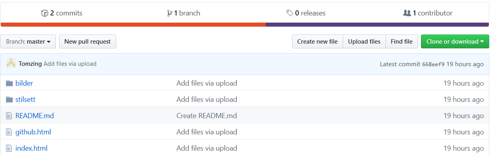

Github
Github er et kraftig git verktøy. Git er et system som sporer endringer gjort
til software kode. Dette verktøyet gjør det mulig å kollaberere med andre utviklere
på samme kode, se endringene gjort til den og ta i mot feilmeldinger fra brukere/testere. Eieren av
et prosjekt kan også velge hva som blir lagt til i koden gjennom pull requests.
Selv så synes jeg at github virker som et bra verktøy for å holde oversikt over versjoner du har laget
av et prosjekt, og en bra måte å gå tilbake til en tidligere versjon hvis noe blir ødelagt. I tillegg til
dette så har også leder av prosjektet kontroll på hva som blir lagt inn i prosjektet med "pull requests".
Så lederen av prosjektet kan da se direkte hva andre vil legge inn og verifisere at det blir riktig.

Hei